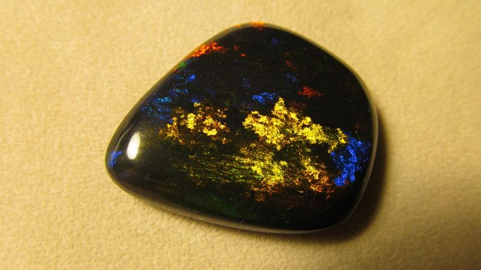
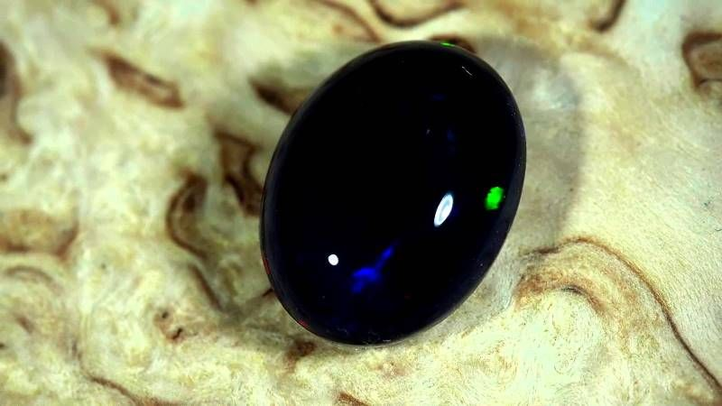
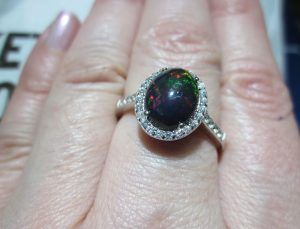
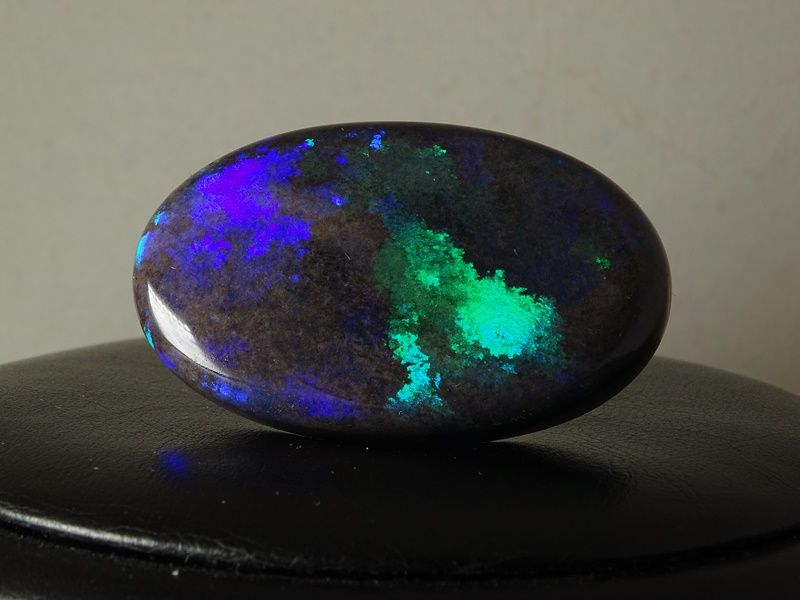
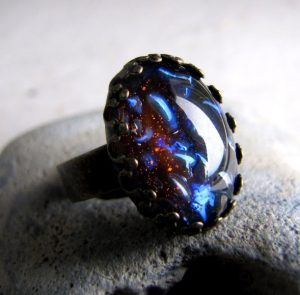
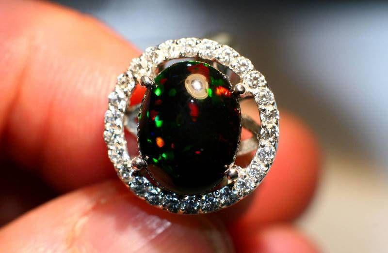
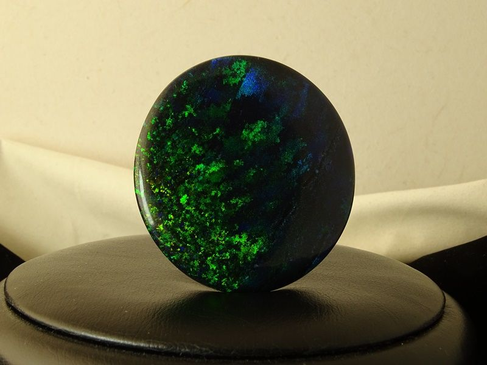
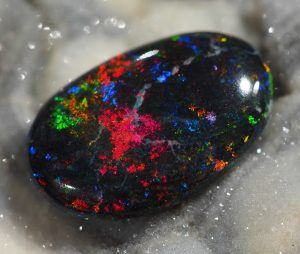

Черный опал
Чем интересен и ценен черный опал. Какие лечебные и магические свойства имеют талисманы и украшения из него. Кому стоит носить камень - по гороскопу и не только.

Черный опал является полудрагоценным камнем. Он обладает необыкновенными характеристиками. Необходимо заметить, что каждый самоцвет подобного рода является уникальным в природе. Одни и те же переливы и структуры невозможно встретить несколько раз. Именно поэтому данный камень является настолько ценным.
Черный опал не всегда соответствует своему названию. Нередко он имеет темно-синий или зеленоватый окрас с различными включениями. Внешний вид камня никого не оставляет равнодушным. Самоцвет переливается множеством оттенков, похожих на яркие вспышки. Особенно ценными являются опалы с желтоватыми и алыми переливами.
Черный минерал встречается в США, Индонезии и Мексике. Необыкновенный темный цвет обусловливается органическими включениями, входящими в состав. Реже камень можно встретить в Украине, иногда и на Северном Кавказе.
Родиной благородного темного самоцвета является Австралия. С давних пор он считался особенным. Камешек применяли не только в качестве материала для изготовления роскошных украшений, но и как средство защиты от сглаза и проклятий.

Что представляет собой черный опал
Помимо своего необыкновенного внешнего вида, камень обладает и рядом лечебных свойств, которые знали еще издревле и активно применяли. Основная зона воздействия самоцвета — это сердце и сосуды. Также он эффективен для лечения:
- расстройств центральной нервной системы;
- депрессии;
- эмоциональной нестабильности.
Камень эффективно избавляет от ночных кошмаров и расстройств сна. Опал темных оттенков хорошо применять после различных нервных срывов и длительных тяжелых ситуаций, которые отразились на психике. Среди других камней данный минерал используют и для устранения проблем со зрением, что крайне актуально на начальных этапах развития недугов.

Опаловый амулет является помощником как для женщин, так и для мужчин. Благодаря ему представительницы прекрасного пола избавляются от проблем с зачатием. У мужчин в свою очередь улучшается работа репродуктивных органов. Женщины в положении, носящие такой амулет, смогут успешно родить без осложнений.

Камень носят в виде талисмана, а также настаивают воду на нем. Целебная жидкость способна избавлять от болезней сердца и повышать иммунитет. Если ежедневно смотреть на опал, то зрение становится острее, снижается давление.

Помимо лечебных свойств, самоцвет славится и магическими способностями. Еще несколько столетий назад его применяли для ограждения от дурного влияния, сглаза и порчи. Украшения на основе опала были не столько данью моды, сколько служили мощным оберегом.
Опаловые перстни создают мощную энергетическую защиту для их обладателя. Первозданный материал имеет намного больше полезных свойств, нежели прошедший технологическую обработку. Однако и такой вариант не является пустышкой и применяется для улучшения здоровья и защиты от негатива.
Дополнительная характеристика
Самоцвет темного оттенка оказывает непосредственное воздействие на личность. Он способствует развитию творческого потенциала, открывает соответствующие энергетические каналы. Его крайне полезно носить актерам, певцам и другим людям подобного рода профессий.

Черные опалы избавляют от беспочвенных страхов и опасений. Их используют как талисманы на удачу, ведь практически всем своим обладателям они приносят счастье и гармонию. Камень использовали еще древние маги для предсказания будущего и для усиления своих способностей. Многие шаманы считают, что он развивает интуицию даже у простого человека.
Индийцы и по сей день придерживаются мнения, что опаловый амулет является полезным для ребенка, ведь он позволяет ему быть успешным, быстро расти и развиваться. Камень подойдет Скорпионам, Водолеям, Стрельцам и Весам. Самоцвет усиливает энергетику и позволяет двигаться в правильном направлении.

Существует поверье, что минерал способен придать женщине шарм, а мужчине обаятельность. С давних пор опал носили на удачу. Хотя у некоторых народов есть поверье о том, что камень может навлечь неприятности на тех, кто неправильно с ним обращается. К тому же, самоцвет часто усиливает фантазии и без того мечтательных натур, отрывая их от реальности. Это следует учитывать при выборе украшения.

Считается, что минерал может быть отличным помощником в борьбе со своими грехами и зависимостями. Многие специалисты считают очень благоприятным знаком присутствие опала дома. Он служит оберегом от пожаров, воровства и других непредвиденных обстоятельств. Лучше всего приобретать серебряные украшения с минералом. Людям с ослабленной энергетикой, которые не верят в собственные силы, не следует носить камень, так как он не принесет пользы и в лучшем случае будет просто бесполезным.